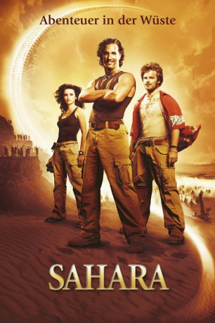

#2970 Sahara - Abenteuer in der Wüste
Alternativ: Sahara
 
 IMDB-Wertung: 6.0 / 10
IMDB-Wertung: 6.0 / 10  Metascore: 41
Metascore: 41 
Der verwegene Schatzsucher Dirk Pitt und sein Kumpel Al sind auf der Suche nach dem legendären “Schiff des Todes”, das sich angeblich irgendwo vor der Küste Afrikas befindet. Der Draufgänger wird zufällig Zeuge, wie Dr. Eva Rojas, eine engagierte Ärztin für die Welt-Gesundheitsorganisation in Afrika, Opfer eines Hinterhalts durch den Diktator General Kazim wird und eilt ihr zur Rettung. Die attraktive Ärztin untersucht die Ausbreitung einer mysteriösen Seuche, zusammen kommen sie bald auf die Spur einer gewaltigen Verschwörung. Ihre Nachforschungen bringen sie immer wieder in Lebensgefahr, denn die Hintermänner wollen unter keinen Umständen, dass ihr schmutziges Treiben aufgedeckt wird. Hilfe bietet der vermögende französische Industrielle Yves Massarde, der mit seinen guten Kontakten Wege ebnen könnte, die für die Aufklärung wichtig sind.
Jahr: 2005
Dauer: 124 Minuten
FSK: 12
Land: England Studio: UFATonspuren: DTS - ,
Untertitel: Deutsch,
Auflösung: 1080p (1920x800) Größe: 9400 MB
Genre: Action, Thriller, Komödie, Abenteuer
Regisseur: Breck Eisner
Drehbuch: Clive Cussler, Thomas Dean Donnelly, Joshua Oppenheimer, John C. Richards, James V. Hart
Soundtrack: Clint Mansell
Darsteller:
 Matthew McConaughey als Dirk Pitt
Matthew McConaughey als Dirk Pitt Steve Zahn als Al Giordino
Steve Zahn als Al Giordino Penélope Cruz als Eva Rojas
Penélope Cruz als Eva Rojas William H. Macy als Admiral Jim Sandecker
William H. Macy als Admiral Jim Sandecker Rainn Wilson als Rudi Gunn
Rainn Wilson als Rudi Gunn Delroy Lindo als Carl
Delroy Lindo als Carl Lambert Wilson als Yves Massarde
Lambert Wilson als Yves Massarde Lennie James als General Zateb Kazim
Lennie James als General Zateb Kazim- Robert Cavanah als Captain Tombs
- Rakie Ayola als Mrs. Nwokolo
 Clint Dyer als Oshodi
Clint Dyer als Oshodi- Daniel Njo Lobé als Tuareg Sangare
 Francis Magee als Fuse Cutter
Francis Magee als Fuse Cutter Patrick Malahide als Ambassador Polidori
Patrick Malahide als Ambassador Polidori- Femi Ogunbanjo als Modibo's Tuareg #2
 Nathan Osgood als Gun Captain
Nathan Osgood als Gun Captain Glynn Turman als Dr. Frank Hopper
Glynn Turman als Dr. Frank Hopper Mark Wells als Sailor Who Drops Gold
Mark Wells als Sailor Who Drops Gold- Daniel Jude Gennis als Mr. Nwokolo , uncredited
- Jude Akuwudike als Imam
- Mark Aspinall als Lawyer
- Christopher Bello als Train Driver
- Nicholas Beveney als Gunboat 1 Officer
- Empotoe Bosage als Pick Up Truck Guard
- Matthew Flynn als First Lieutenant - Ironclad
- Paulin Fodouop als Modibo
- Ouahbou Houcine als Tuareg Village Boy #1
- Emmanuel Ighodaro als Kazim's Officer Asselar
- Maurice Lee als Zakara
- Thierno Amath Mbaye als Pick Up Truck Driver
- Eddie Osei als Train Guard
- Lahcen Ouezgane als Tuareg Village Boy #2
- Robert Paterson als NUMA Crew Member
- Abdul Salis als Oumar
- Tosin Sanyalo als Azikiwe Nwokolo
- Christopher Saul als Pilot - Ironclad
- Billy Seymour als Powder Monkey
- Mark Springer als Solar Plant Guard
- Celestine Vita als Old Woman in Labbezanga
- Neil Findlater als Gunner - Ironclad , uncredited
Datei: X:\2005(N-Z)\Sahara - Abenteuer in der Wüste (2005, FSK12, 1920x800).mkv seit 11.01.2016
Festplatte: HD 2005(G-Z)-2006(A-Z)
 Es gibt insgesamt 50 Filme in der Gruppe '2005(N-Z)'
Es gibt insgesamt 50 Filme in der Gruppe '2005(N-Z)'